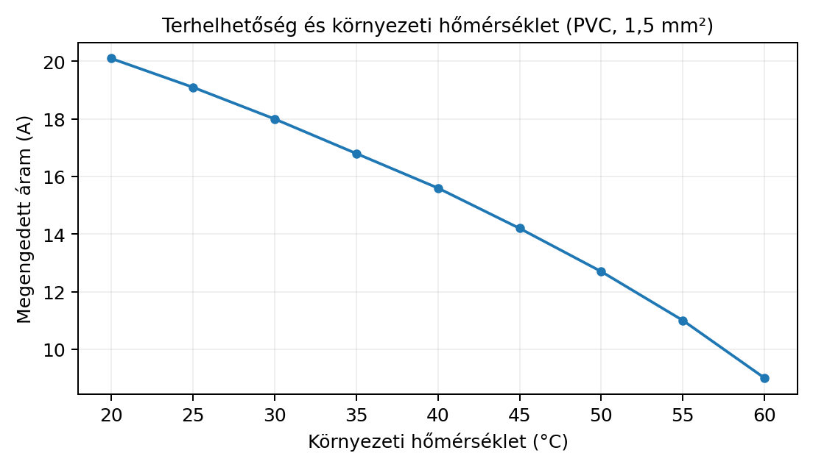

Statikus változat (mint a PDF-ben)
A családi ház vagy lakásfelújítás során az egyik leggyakoribb szerelői hiba, hogy a vezetőt „szemre” választják: „egy 1,5 mm²-es vezeték elbírja a 16 ampert”. Ez a gyakorlat azonban figyelmen kívül hagyja a szerelési módot, a környezet hőmérsékletét és a közös védőcsőben futó többi áramkör hatását. A vezető és a szigetelés melegedése határozza meg, hogy az adott áramkör tartósan, károsodás nélkül üzemeltethető-e. Ebben az alfejezetben az úgynevezett tartós terhelhetőség fogalmát és a javítótényezők alkalmazását tanuljuk meg, mert e nélkül sem a Feszültségesés és a vezeték méretezése, sem az Anyag- és eszközkiválasztás, árajánlat vagy az Aljzatkörök és fogyasztói csatlakozások, nedves helyiségek feladatait nem lehet biztonságosan megoldani.
Amikor a vezetőn áram folyik, a vezető ohmos ellenállásán teljesítmény hővé alakul. Ez a hő egy része a vezető anyagát melegíti, másik része a szigetelésen, a környező levegőn vagy a szerelőcső anyagán keresztül távozik. A hőmérséklet akkor állandósul, amikor a veszteségi hőteljesítmény megegyezik a környezetbe leadott hőteljesítménnyel.
Definíció. A vezeték megengedett üzemi hőmérséklete az a legnagyobb hőmérséklet, amelyen a szigetelőanyag a várható élettartama alatt – jellemzően több évtized – nem károsodik káros mértékben. A legelterjedtebb PVC-alapú szigetelésnél ez a határ °C, a térhálósított polietilén (XLPE) alapú szigetelésnél pedig °C (ellenőrizendő: az adott gyártói adatlap és a hatályos szabvány pontos értékei).
A hőmérséklet-emelkedés körülbelül az áram négyzetével arányos, ezért a túlterhelés gyorsan túlmelegedést okoz. A túl magas hőmérséklet először a szigetelőanyag öregedését gyorsítja fel: a PVC elveszti rugalmasságát, megkeményedik, megreped; ezáltal csökken a dielektromos szilárdsága, és kialakulhat a zárlat. A melegedés a vezetőt körülvevő szerelvényeket, kapcsolókat, csatlakozó kapcsokat is igénybe veszi, és tűzveszélyes helyzetet teremt.
Összefüggés. A vezető ellenállása a hőmérséklettel is nő, tehát a melegedés visszahat az áramfelvételre: nagyobb hőmérséklet nagyobb ellenállást, nagyobb ellenállás további melegedést okoz. A gyakorlati méretezésnél azonban a megengedett hőmérséklethez tartozó táblázatos, úgynevezett tartós terhelhetőségi értéket használjuk, amely már ezt a visszacsatolást figyelembe veszi.
A vezetékek tartós terhelhetősége () függ a vezető anyagától (réz vagy alumínium), a szigetelés típusától, a keresztmetszettől, a szerelési módtól és a környezet hőmérsékletétől. Az MSZ HD 60364-5-52 szabvány rendszere szerint a gyártók és a tervezők a referencia-körülményekre (levegőben, csőben, szabadon szerelve, adott környezeti hőmérséklet, egyetlen áramkör) adják meg a vezetők névleges terhelhetőségét. A táblázatból kiolvasható alapértéket azután javítótényezőkkel igazítjuk a valóságos szerelési viszonyokhoz.
Szabvány. A kisfeszültségű villamos berendezések létesítését a magyarországi gyakorlatban az MSZ HD 60364 sorozat szabályozza; a vezetők terhelhetőségének és a szerelési módoknak a részleteit az MSZ HD 60364-5-52 tartalmazza. A terhelhetőségi táblázatok, a javítótényezők és a hőmérsékleti alapértékek a szabvány mellékleteiben találhatók; az aktuális kiadást és a táblázatszámokat mindig ellenőrizni kell (ellenőrizendő: a hatályos szabványkiadás, a használt táblázat pontos száma és a referencia-hőmérsékletek).
Az alábbi ábra egy szemléltető, számított értékű diagram, amely egy tipikus réz, PVC szigetelésű, 1,5 mm²-es, csőben szerelt vezető terhelhetőségét mutatja a környezeti hőmérséklet függvényében, feltételezve, hogy a megengedett üzemi hőmérséklet 70 °C és a referencia-hőmérséklet 30 °C. A pontokat a képletből számoltuk: 20 °C-on 20,1 A, 40 °C-on 15,6 A (), 60 °C-on már csak 9,0 A.

A diagram világosan mutatja, hogy a terhelhetőség már néhány fokos környezeti hőmérséklet-emelkedésre is érzékenyen csökken, ezért a javítótényező alkalmazása nem elhanyagolható formalitás.
A tényleges megengedett terhelés kiszámításához az alap-táblázatból kiolvasott értéket meg kell szorozni a vonatkozó tényezőkkel. Az általános képlet:
ahol: - a környezeti hőmérséklet javítótényezője (a referencia-hőmérséklettől való eltérés miatt), - a csoportosítási tényező (több áramkör vagy vezeték közös csőben, tálcán vagy kötegben fut), - a hőszigetelés tényezője (pl. hőszigetelésben vagy szigetelt falüregben fektetett vezeték esetén), - további tényezők is lehetnek, például talajban fektetésre vagy alumíniumvezetőre, de a gyakorlati szerelői feladatokban a fenti három a leggyakoribb.
A tényezők értéke általában 1,0 alatt van, tehát csökkentik a terhelhetőséget. Előfordulhat 1,0 feletti is, például a 30 °C-nál alacsonyabb környezeti hőmérsékletnél (lásd a 2. példát), de a tervezők ezt a tartalékot a gyakorlatban gyakran nem használják ki, hanem biztonsági okból -gyel számolnak.
A tényezők a helyszínen jól felismerhető helyzetekhez tartoznak. Az alábbi ábra egy családi ház metszetén mutatja őket: az 1 elosztó, mérőhely környezete tartósan melegebb (a lenti példában 35 °C, ); a 2 kazánházban a fűtési csövek mellett vezetett kábel környezete még melegebb ( erősen csökkent); a 3 padlásfödém hőszigetelésében futó kábel a hőt alig tudja leadni (); a 4 falhoronyban több áramkör fut egy közös csőben ().
Felméréskor ezért nem elég a tervrajzot nézni: a kábel tényleges nyomvonalán kell végigmenni, és minden olyan szakaszt, ahol meleg környezet, hőszigetelés vagy csoportosítás van, külön tényezővel kell figyelembe venni; a legkedvezőtlenebb szakasz dönt. Gyakran olcsóbb a nyomvonalat módosítani (például a kábelt a fűtési csövektől távolabb vezetni), mint nagyobb keresztmetszetet választani. A HTML-kiadásban a számokra mutatva kiemelődnek a helyek.
Szabály. A javítótényezőket nem tetszőlegesen kerekítjük, hanem a szabvány táblázataiból választjuk. A végeredményt a szabványos terhelhetőségi értékre, a biztonság irányába kerekítve adjuk meg.
Példa. Vegyünk egy réz, PVC szigetelésű, 1,5 mm²-es vezetőt, amelyet süllyesztett falhoronyban, műanyag csőben szerelünk. A szabvány szerinti referencia-terhelhetőség (két terhelt erű, csőben, 30 °C) legyen A (ellenőrizendő: a hatályos táblázat pontos értéke). Ha a környezeti hőmérséklet a mérőszekrény közelében tartósan °C, a tényező kb. . Ha a csőben négy másik áramkör is fut, a csoportosításra (5 áramkör egy csőben) (ellenőrizendő: a csoportosítási tényezők táblázata). Hőszigetelés nem érinti, így . A korrigált terhelhetőség:
Látható, hogy a 16 A-es kismegszakítóval védett aljzatkör helytelen választás lenne ilyen körülmények között, mert a vezető megengedett terhelhetősége jóval a védelmi szint alá esne.
A csoportosítás hatását az alábbi ábra metszetekben mutatja. Az (a) sorban egy, három és öt áramkör vezetékei futnak egy-egy védőcsőben; a fejezet példáinak tényezői , és (ellenőrizendő: a csoportosítási táblázat). A (b) sorban ugyanazok a kábelek a tálcán egyszer kötegben, egymáshoz érve, egyszer egy rétegben, távközzel vannak elhelyezve.
A kötegben a középső kábel melegszik a legjobban, mert minden oldalról meleg szomszéd veszi körül; ezért a csoportosítási tényezőt a valós darabszám és elrendezés alapján kell kiválasztani, és nem a „csak néhány kábel” benyomás alapján. A távköz nagyságát és a hozzá tartozó tényezőt a szabvány táblázata adja. A HTML-kiadásban az egyes elrendezésekre mutatva elolvasható a magyarázat.
A biztonságos méretezés alapfeltétele az
egyenlőtlenséglánc, ahol: - az áramkör tartós üzemi árama (a legnagyobb tartósan folyó áram), - a védőkészülék (kismegszakító vagy olvadóbiztosító) névleges árama, - a vezeték korrigált tartós terhelhetősége.
Törvény. Az MSZ HD 60364-4-43 szerint a vezetők túlterhelés elleni védelmét úgy kell kialakítani, hogy a vezető a várható túlterhelések és zárlatok során ne károsodjon. Ennek alapja az feltétel, valamint az, hogy a vezető terhelhetősége a védőkészülék kioldási karakterisztikájával összhangban legyen. (Ellenőrizendő: a hatályos szabvány követelménye és a védőkészülék kioldási karakterisztikája.)
Az egyenlőtlenség értelmezése: - : a védőkészüléket legalább akkorára kell választani, mint a várható legnagyobb üzemi áram, különben a normál üzemben is leold. - : a védőkészülék névleges árama nem haladhatja meg a vezető korrigált terhelhetőségét, különben a vezető túlmelegedhet anélkül, hogy a védelem lekapcsolna.
Szabály. A túlterhelés elleni védelemnek egy második feltételt is teljesítenie kell: , ahol a védőkészülék megállapodás szerinti, egy órán belül biztosan működő árama. Kismegszakítónál , ezért ott az teljesülése elég; olvadóbiztosítónál (a megállapodás szerinti áram nagyobb, kb. ) külön ellenőrizni kell (ellenőrizendő: MSZ HD 60364-4-43, MSZ EN 60898-1, MSZ EN 60269).
A feltételek teljesülése esetén a vezeték hőmérséklete tartósan a megengedett határ alatt marad; a – tartományban azonban a védőkészülék csak késleltetve old le, a vezeték átmenetileg a határ fölé melegedhet.
Megjegyzés. A gyakorlatban a feltételt a Kismegszakítók és kioldási jelleggörbék alfejezet is használja; ott a B, C, D karakterisztikájú kismegszakítók kioldási viselkedését is figyelembe vesszük.
Adott: Egy irodai klímaberendezés névleges teljesítménye kW, névleges feszültsége V, teljesítménytényezője . A vezetéket fém védőcsőben, a szerelt falon kívül szerelik, a környezeti hőmérséklet °C, a csőben még két másik áramkör is fut. A vezeték réz, PVC szigetelésű, 2,5 mm², a referencia-terhelhetőség legyen A (két terhelt erű, fém védőcsőben falon, B1 szerelési mód, 30 °C) (ellenőrizendő a táblázatban).
Keresett: Megfelel-e a 2,5 mm²-es vezető, ha a védőkészülék névleges árama A?
Megoldás lépései:
Nem teljesül, mert A nagyobb, mint A. A vezető túlterhelhető lenne, tehát nagyobb keresztmetszetet (4 mm² vagy nagyobb) kell választani, vagy csökkenteni kell a csoportosítást, illetve a hőmérsékleti hatást.
Tanulság: a 2,5 mm²-es vezető a A-es kismegszakítóval látszólag megfelel, de a javítótényezők miatt a tényleges terhelhetősége a névleges alá esik.
Adott: Egy lakás fővezetéke réz, 6 mm², PVC szigetelésű, szerelőcsőben vezetve, a külső falon, ahol a környezeti hőmérséklet °C. A lakás legnagyobb tartós üzemi árama A, a fővezeték védőkészüléke A (a mérőhely előtti, plombált gG olvadóbiztosító). A referencia-terhelhetőség 6 mm²-re, csőben, 30 °C: A (ellenőrizendő). A csőben a fővezetéken kívül egy másik, 10 A-es áramkör is fut.
Keresett: Megfelelő-e a méretezés?
Megoldás:
Nem teljesül: kisebb, mint . A 6 mm²-es vezeték ebben a szerelési helyzetben túlmelegedhet, a 35 A-es védő nem fogja időben megvédeni. Mivel a védelmet gG olvadóbiztosító adja, a második feltételt is ellenőrizzük (): , – ez sem teljesül ().
Megoldás: nagyobb keresztmetszet vagy a csoportosítás megszüntetése. Ellenőrzés 10 mm²-rel (azonos oszlopból: három terhelt ér, B1 szerelési mód, – ellenőrizendő):
Mindkét feltétel teljesül, tehát a 10 mm²-es vezeték megfelel.
Hibás példa ellenpéldaként: Ha valaki a referencia-táblázatból A-t kiolvassa, és anélkül használja, hogy a csoportosítási tényezőt figyelembe venné, a vezető valójában kb. A-re terhelhető. A A-es védő nem old le, a vezető tartósan a megengedett hőmérséklet felett üzemel, a szigetelés öregszik, és a lakáselosztóban tűzveszély alakulhat ki.
A vezető hőmérséklet-emelkedését a veszteségi teljesítmény és a hőellenállás határozza meg. Egyszerű stacionárius modellben a vezető hőmérséklete:
ahol a vezető hőmérséklete, a környezet hőmérséklete, a vezető ellenállása a meleg állapotban, pedig a termikus ellenállás a vezető és a környezet között. Ezt a képletet a gyakorlati méretezésben ritkán használjuk, mert a szabványos táblázatok már a megengedett hőmérsékletre vonatkoznak, de segít megérteni, miért nő a hőmérséklet az áram négyzetével, és miért fontos a jó hőelvezetés.
A könyv HTML-kiadásában ehhez az alfejezethez egy interaktív terhelhetőség-kalkulátort csatolunk. A kalkulátorban a felhasználó megadja a táblázatból kiolvasott referencia-terhelhetőséget (ez a vezető anyagától, keresztmetszetétől és a szerelési módtól függ), kiválasztja a szigetelés típusát (PVC vagy XLPE), beállítja a környezeti hőmérsékletet, a csoportosítási és a hőszigetelési tényezőt, valamint az üzemi áramot és a védőkészülék névleges áramát. A program kiszámolja a tényezőt és a korrigált értéket, majd ellenőrzi az feltételt, szövegesen is kiírva, hogy teljesül-e. A statikus ábra az 1. példa három áramát mutatja egymás mellett: A, A, A – az reláció nem teljesül.
A kalkulátorban a referencia-terhelhetőséget () és a , tényezőt a hatályos táblázatból kell beírni (a gombok a fejezet két kidolgozott példáját töltik be); a tényezőt a program a fenti képletből számolja PVC (70 °C) vagy XLPE (90 °C) szigetelésre, és az feltételt is kiírja.
Cél: Egy adott áramkör vezetőjének kiválasztása táblázatból a javítótényezők alkalmazásával.
Eszközök és anyagok: az MSZ HD 60364-5-52 terhelhetőségi és javítótényező-táblázatai (vagy a gyártói katalógus megfelelő táblázatai), zsebszámológép, az áramkör adatai (üzemi áram, védőkészülék névleges árama, szerelési mód, környezet).
Biztonsági korlát. A méretezés tanműhelyi vagy irodai feladat, feszültség alatti munkát nem igényel. Hálózati feszültségű munkát csak jogosult személy végezhet.
Az öt biztonsági szabály itt nem értelmezhető, mert nem mérünk feszültség alatti hálózatot, csak papíralapú vagy gépi számítást végzünk. Amennyiben a kiválasztott vezetőt később ténylegesen beszerelik, a szerelés során a Felmérés, tervértelmezés és szerelési technológia biztonsági előírásait kell betartani.
Lépések:
Ellenőrzési pontok: Az eredményül kapott legyen nagyobb vagy egyenlő -nel. A ne térjen el nagymértékben a referencia-értékből; ha a javítótényezők szorzata nagyon alacsony, vizsgáld meg a szerelési mód megváltoztatásának lehetőségét.
A javítótényezők elhagyása. A leggyakoribb hiba, hogy a szerelő csak a referencia-táblázatból olvas, és nem szoroz a csoportosítási vagy hőmérsékleti tényezővel. Ez túlmelegedéshez, idő előtti szigetelésöregedéshez vezet. Helyes: mindig alkalmazd a tényezőket, és a végeredményt ellenőrizd az feltétellel.
Hibás szerelési mód. A szerelési módot gyakran nem azonosítják pontosan (pl. falon kívüli csőben szerelt vezetőt levegőben szereltnek tekintik, ami nagyobb terhelhetőséget ad). A rossz osztályozás miatt a vezető valóságban kevesebb áramot bír el. Helyes: a szerelés tényleges kialakítását azonosítsd a szabványos jelölésekkel, és a megfelelő táblázatot használd.
A csoportosítás figyelmen kívül hagyása. Több áramkör közös védőcsőben vagy kábeltálcán való elhelyezése esetén a szomszédos vezetők melegítik egymást. Ha ezt nem vesszük figyelembe, a belső vezetők hőmérséklete a megengedett érték fölé emelkedik. Helyes: a csoportosítási tényezőt mindig a valós darabszám és elrendezés alapján válaszd ki.
A védőkészülék névleges áramának túlzott megválasztása. Ha túl nagy, a feltétel nem teljesül: a kismegszakító nem védi meg a vezetőt a tartós túlterhelés ellen. Helyes: a védőkészüléket az üzemi áramhoz és a vezető terhelhetőségéhez igazítsd, ne a csúcsáramokhoz.
A túlterhelés és a zárlat összemosása. A túlterhelés elleni feltétel ( és ) a tartós, kis túláramra vonatkozik; a kismegszakító hőkioldója késleltetett, ezért rövid idejű túláramnál a vezető átmenetileg megmelegszik. A zárlati áramra külön feltétel van (, azaz a vezető termikus határa és a kioldási idő), amelyet a Vezetékvédelem, koordináció és zárlati áram alfejezet tárgyal. Ha a méretezés csak az egyik feltételt vizsgálja, a vezető károsodhat. (Ellenőrizendő: a gyártói kioldási görbe és a vezető termikus terhelhetőségének összevetése.)
1. feladat (A). Határozd meg egy egyfázisú, 2,3 kW-os, teljesítménytényezőjű fogyasztó üzemi áramát 230 V-on. Ezután javasolj legalább akkora értékű kismegszakítót, hogy az feltétel teljesüljön.
2. feladat (A). Egy 10 mm²-es réz, PVC szigetelésű vezető referencia-terhelhetősége szabadon szerelve, 30 °C-on 51 A (ellenőrizendő). A környezet 40 °C, a hőmérsékleti javítótényező 0,87. Mennyi a korrigált terhelhetőség, ha nincs csoportosítás és hőszigetelés?
3. feladat (B). Egy háromfázisú, 5,5 kW-os (leadott, tengelyteljesítmény), , hatásfokú motor vezetékét szerelik falon, közös védőcsőben (B1 szerelési mód), ahol 5 áramkör fut együtt. A környezeti hőmérséklet 30 °C. A választott vezető 4 mm² réz, PVC, három terhelt ér, referencia-terhelhetőség 28 A (B1, 30 °C – ellenőrizendő). A csoportosítási tényező 0,60. Válassz megfelelő névleges áramú kismegszakítót a motorvédelemhez (a direktindítási áramlökést most ne vizsgáld), és ellenőrizd az feltételt.
4. feladat (B). Egy lakás aljzatköreit 2,5 mm² réz, PVC vezetővel szerelik süllyesztett védőcsőben. A környezeti hőmérséklet a falhoronyban 35 °C. A referencia-terhelhetőség csőben falon (B1, két terhelt ér), 30 °C-on: 24 A. A hőmérsékleti tényező 0,94, a csoportosítási tényező (3 áramkör egy csőben) 0,70. Megfelel-e a 16 A-es kismegszakító az feltételnek, ha a legnagyobb tartós üzemi áram A? Ha nem, mit javasolsz?
5. feladat (C). Elemezd, miért nem elegendő a vezeték melegedésének ellenőrzéséhez csak az kiszámítása, ha a védőkészülék kioldási karakterisztikája nem ismert. Hivatkozz az feltételre és a kismegszakító termikus kioldójának működésére. (Továbbvitt eredményt készít elő a Kismegszakítók és kioldási jelleggörbék alfejezethez.)
6. feladat (D). Egy irodaépület elosztószekrényéből egy 32 A-es háromfázisú áramkör indul egy 10 m-re lévő al-elosztóba. A vezeték réz, 6 mm², PVC, falon, közös védőcsőben (B1 szerelési mód) szerelve. A csőben 7 áramkör fut, a csoportosítási tényező 0,54 (ellenőrizendő). A környezet 40 °C, a hőmérsékleti tényező 0,87. A referencia-terhelhetőség 6 mm²-re, három terhelt érrel, B1 szerelési módban, 30 °C-on 36 A (ellenőrizendő). A legnagyobb tartós üzemi áram A, a védőkészülék A. Ellenőrizd, hogy a választott vezető megfelel-e. Ha nem, milyen lépést tennél? (Ez a feladat összekapcsolja az feltételt az Anyag- és eszközkiválasztás, árajánlat alfejezettel.)
Hamis. A PVC megengedett üzemi hőmérséklete általában 70 °C; a 90 °C az XLPE-szigetelésre jellemző. (Ellenőrizendő az aktuális gyártói adatok.)
Korrigált terhelhetőség: A.
a tartós üzemi áram, a védőkészülék névleges árama, a vezető korrigált tartós terhelhetősége. A feltétel biztosítja, hogy a védő ne oldjon le normál üzemben, és a vezető ne hevüljön a megengedett határ fölé.
A vezető túlmelegszik, mert a 16 A-es kismegszakító 16 A fölött sem old le azonnal: kb. 18 A alatt () egy órán belül nem old ki, kb. 23 A-nél () egy órán belül kikapcsol (ellenőrizendő: MSZ EN 60898-1), a 14,5 A-re méretezett vezető viszont már 14,5 A felett tartósan károsodik. A hőmérséklet-emelkedés miatt a szigetelés öregszik, zárlat és tűz alakulhat ki.
Hőmérséklet (nagyobb környezet → kisebb terhelhetőség), csoportosítás (több áramkör → kisebb), hőszigetelés (rosszabb hőelvezetés → kisebb). A tényezők általában 1-nél kisebbek (csökkentő hatásúak); 1-nél nagyobb csak 30 °C-nál alacsonyabb környezetben fordul elő.
1. feladat (A).
A.
A kismegszakítók névleges sorában a következő szabványos érték 13 A (…
10, 13, 16, 20, 25, 32 … – ellenőrizendő: MSZ EN 60898-1); a vezeték
terhelhetőségétől függően 13 vagy 16 A választható
().
2. feladat (A).
,
tehát kb. 44 A.
3. feladat (B).
Először az üzemi áram. Az 5,5 kW leadott teljesítmény, a felvett áramhoz
a hatásfok is kell:
A.
A korrigált terhelhetőség:
.
Választás:
(C jelleggörbe):
teljesül (a 16 A is teljesítené, de szorosabb tartalékkal); a 10 A
kisebb az üzemi áramnál. (Ellenőrzésképpen: 2,5 mm²-es vezetővel – három
terhelt ér, kb. 21 A, ellenőrizendő –
lenne; 10,4 A és 12,6 A között nincs szabványos
,
ezért kell a 4 mm².) A motor túlterhelés elleni védelmét a gyakorlatban
motorvédő kapcsoló vagy hőkioldó adja, a motor névleges áramára
beállítva; ezt a Motorvédő kapcsoló, hőkioldó,
megszakító és szakaszoló alfejezet, a direktindítási áramlökést
pedig a Készülékkiválasztás: áram, feszültség,
élettartam, koordináció alfejezet tárgyalja.
4. feladat (B).
A.
Az
nem teljesül. Megoldás: 13 A-es kismegszakító
(
teljesül), vagy növelni a keresztmetszetet (pl. 4 mm²), vagy csökkenteni
az egy csőben futó áramkörök számát. Ha a 16 A-es védőkészüléket meg
kell tartani, a 4 mm²-es vezeték a megoldás.
5. feladat (C).
Az
önmagában csak a tartós terhelhetőséget adja meg. A védőkészülék
kioldási karakterisztikája határozza meg, hogy adott túláramnál mennyi
idő alatt old le. Ha a kismegszakító hőkioldója túl magas névleges áramú
vagy túl lassú karakterisztikájú, akkor a vezető hőmérséklete a kioldás
előtt túllépheti a megengedett értéket. Az
feltétel a tartós túlterhelésre vonatkozik; a zárlati áramokra külön
ellenőrizni kell a kioldási időt és a vezető termikus terhelhetőségét. A
Kismegszakítók és kioldási jelleggörbék
alfejezetben látjuk majd a B, C, D karakterisztikák különbségét.
6. feladat (D).
A referencia-terhelhetőség 36 A, a javítótényezők:
,
,
.
A.
Az
A, tehát
nem teljesül. A vezető túlterhelhető. Két járható megoldás van. (a) A
csoportosítás csökkentése: a 32 A-es betáplálás külön csőbe kerül
(),
de a 6 mm² így is kevés
(
A < 32 A), ezért külön csőben 10 mm² kell
(
A
A). (b) A közös csőben marad, de a szükséges referencia-terhelhetőség
A, ezért 25 mm² kell (kb. 89 A, így
A); a 16 mm² kb. 68 A-es értékével
A, ami éppen kevés. A kisebb névleges áramú védőkészülék nem megoldás,
mert
A kell, a 6 mm² korrigált
-je
pedig csak
A (táblázati értékek: ellenőrizendő: MSZ HD 60364-5-52). Az Anyag- és eszközkiválasztás, árajánlat
alfejezetben az anyagkiválasztás költség- és helyigényét is mérlegelnünk
kell.
A vezetékek tartós terhelhetőségét a vezető melegedése, a szigetelés megengedett üzemi hőmérséklete (PVC: 70 °C, XLPE: 90 °C) és a szerelési körülmények együttesen határozzák meg. A referencia-terhelhetőségi táblázatból kiolvasott értéket a környezeti hőmérséklet (), a csoportosítás () és a hőszigetelés () javítótényezőivel korrigáljuk: . A túlterhelés elleni védelem alapfeltétele az összefüggés, ahol az üzemi áram, a védőkészülék névleges árama, a vezető korrigált terhelhetősége. Ez a feltétel biztosítja, hogy a vezető hőmérséklete a megengedett érték alatt maradjon, és a védelem időben lekapcsoljon. Továbbvitt eredmény. Az feltételt és a korrigált meghatározását használjuk a Feszültségesés és a vezeték méretezése, az Anyag- és eszközkiválasztás, árajánlat és a nedves helyiségek aljzatköreinek kialakítása során (Aljzatkörök és fogyasztói csatlakozások, nedves helyiségek).
A fejezetben hivatkozott szabványok az MSZ HD 60364 sorozat, elsősorban az MSZ HD 60364-5-52. A konkrét táblázatszámok, a referencia-terhelhetőségi értékek, a javítótényezők és a hőmérsékleti határértékek a szabvány aktuális kiadásától függnek; az itt szereplő értékek tanulási példák, és nem feltétlenül azonosak a hatályos táblázat értékeivel. A felhasználás előtt mindig ellenőrizni kell a gyártói adatlapokat és a hatályos szabványt (ellenőrizendő: az MSZ HD 60364-5-52 aktuális kiadásának terhelhetőségi táblázatai, javítótényezői és a referencia-hőmérsékletek).